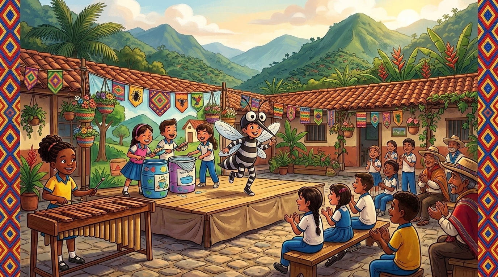

Módulo 1: Teatro Epidemiológico en Tonga y Ciclo Vectorial del Dengue
Exploramos cómo una sola hembra infectada del mosquito Aedes aegypti desencadena una cadena de transmisión comunitaria cuando encuentra depósitos de agua limpia destapados, y cómo el trabajo colectivo en Tonga protege la salud de toda la vereda.

Fundamentación Biológica y Modelo Matemático del Riesgo Vectorial
De acuerdo con la Organización Mundial de la Salud (OMS, 2024) y el Instituto Nacional de Salud de Colombia, el dengue es una enfermedad viral aguda transmitida por la picadura de hembras infectadas del género Aedes, principalmente Aedes aegypti. A diferencia de otros zancudos que buscan charcos lodosos, la hembra de Aedes aegypti es antropofílica y doméstica: deposita sus huevos adheridos a las paredes internas de tanques bajos, albercas, canecas, llantas y baldes con agua limpia estancada dentro o alrededor de la escuela y las viviendas.
Ciclo Biológico Acuático y Aéreo
El ciclo comprende cuatro fases: huevo, larva, pupa (fases acuáticas que tardan entre $7$ y $10$ días en climas cálidos del norte del Cauca) y mosquito adulto (fase aérea). Los huevos resisten la desecación adheridos al borde del recipiente durante meses y eclosionan apenas el nivel del agua vuelve a subir.
Cadena de Transmisión Vectorial
El mosquito no nace con el virus: una hembra sana pica primero a una persona con viremia (fase febril), incuba el virus durante el periodo extrínseco ($8$ a $12$ días) y luego transmite el dengue a cada familiar o vecino que pica para madurar sus huevos.
En epidemiología escolar relacionamos la densidad de recipientes destapados ($R_d$), el factor térmico de incubación en el valle geográfico y piedemonte caucano ($\alpha_T$) y la fracción de protección alcanzada por el trabajo comunitario en Tonga ($C_{\text{tonga}} \in [0, 1]$). El número reproductivo básico local ($R_0$) y el Índice de Riesgo Comunitario ($I_{\text{riesgo}}$) se expresan mediante:
$$R_0 = \frac{m \cdot a^2 \cdot b \cdot c \cdot e^{-\mu \tau}}{\mu \cdot r} \qquad \Longrightarrow \qquad I_{\text{riesgo}} = \alpha_T \cdot \left(\frac{R_d}{R_{\max}}\right) \cdot \left(1 - C_{\text{tonga}}\right) \times 100$$Cuando la comunidad organiza la Tonga preventiva y cubre el $100\%$ de sus tanques y canecas ($C_{\text{tonga}} = 1$), el término $(1 - C_{\text{tonga}})$ se anula ($I_{\text{riesgo}} = 0$), rompiendo por completo el ciclo reproductivo del vector sin necesidad de químicos contaminantes.
| Momento de la Sesión (60 min) | Duración | Actividad Pedagógica y Pauta DUA | Operación Intelectual |
|---|---|---|---|
| 1. Apertura y Pregunta Retadora | $10\text{ min}$ | Observación de imágenes/sonidos del zancudo y activación de saberes familiares (DUA 7.2 Relevancia y autenticidad). | Motivación y Comprensión |
| 2. Dramatización en Tonga | $25\text{ min}$ | Conformación de grupos con roles diversos para representar las 3 escenas de la cadena epidemiológica (DUA 5.1 y 8.3). | Modelación y Trabajo Colectivo |
| 3. Reflexión Ubuntu y Registro | $15\text{ min}$ | Diálogo sobre el efecto dominó en la comunidad y registro escrito, pictográfico u oral (DUA 1.2 y 4.1). | Análisis Causal |
| 4. Cierre y Misión Familiar | $10\text{ min}$ | Asignación de la indagación en casa sobre cómo tapamos los recipientes de agua (Articulación PRAE-PEA). | Transferencia Territorial |
Metáfora Conceptual: Tonga Afrocaucana, Tejido del Chumbe Nasa y Agua Cafetera
En la Institución Educativa Técnico San Jacinto (Guachené) y en territorios hermanos como La Unión del Salado, la ciencia no se aprende de forma aislada: se teje con la memoria viva de las tres raíces culturales que habitan el Cauca.
La Tonga y el Principio Ubuntu
En la tradición afrocaucana, la Tonga es la juntanza solidaria para resolver una tarea que una sola persona no podría lograr. Bajo la filosofía Ubuntu ("Yo soy porque nosotros somos"), si nueve casas tapan su alberca pero una sola deja la caneca descubierta, el mosquito vuela hasta $100\text{ m}$ y enferma a toda la cuadra.
El Tejido del Chumbe Nasa
Para el pueblo Nasa, el Chumbe guarda en sus rombos la historia del territorio y la defensa de Uma Kiwe (Madre Tierra). Así como un hilo suelto debilita la faja tejida, un criadero desatendido rompe la armonía entre el agua, la familia y la salud colectiva.
El Agua en la Finca Cafetera
En la cultura cafetera y campesina, recolectar agua lluvia en canecas y tanques para el beneficio del café y el uso doméstico es vital. Cuidar esa agua con tapas firmes honra el trabajo de la tierra sin regalarle posada a las larvas del zancudo.

Laboratorio Escénico y Simulador Epidemiológico 2D en Vivo
Juego 1: Armando las 3 Escenas en Tonga (Pautas DUA 5.1 y 8.3)
Antes de salir al patio a dramatizar, elige tu rol accesible DUA dentro de la Tonga (ningún estudiante queda excluido por timidez o barreras comunicativas) y asigna el orden causal correcto ($1$, $2$ y $3$) a cada escena de la transmisión del dengue:
Escena: La Picadura del Vector
La hembra adulta de Aedes aegypti emerge, pica a una persona con fiebre de dengue y luego vuela hacia las casas vecinas buscando más sangre para madurar sus huevos.
Escena: El Criadero en Depósito Destapado
En el patio queda una caneca o tanque con agua limpia estancada sin tapa. La zancuda deposita sus huevos en la pared húmeda y nacen larvas y pupas en pocos días.
Escena: Efecto Dominó y Familia en Tonga
Varios vecinos enferman (efecto dominó), pero la vereda se reúne en Tonga, cepilla las paredes de las albercas y tapa firmemente todos los recipientes de agua.
Simulador Epidemiológico 2D en Vivo: Dinámica de Casos en 30 Días
Modifica los controles deslizantes para observar en tiempo real cómo cambia la curva de personas en riesgo de dengue en la vereda durante $30$ días según el número de recipientes destapados, la temperatura ambiente del Cauca y el porcentaje de familias que participan en la Tonga preventiva:
Diagnóstico Territorial: ¿Dónde se Esconde el Vector en Nuestra Vereda?
En el diagnóstico participativo del Proyecto Ambiental Escolar (PRAE-PEA) en Guachené y las veredas cafeteras y afrodescendientes del norte del Cauca, identificamos los cuatro depósitos críticos donde la hembra de Aedes aegypti concentra más del $80\%$ de sus posturas:
1. Tanques Bajos y Albercas Domésticas
Almacenan agua limpia para el hogar cuando falla el acueducto veredal. Si permanecen sin tapa o con tapas de madera o tela que absorben humedad, permiten la entrada libre de hembras grávidas.
2. Canecas de Agua Lluvia en el Patio
Usadas tradicionalmente para regar el solar y lavar el café. Requieren una cubierta impermeable ajustada al borde con caucho o zuncho para impedir el paso del mosquito.
3. Llantas, Tarros y Recipientes en Desuso
Acumulan agua lluvia limpia a la sombra. En la Minga y Tonga escolar se clasifican para reciclaje o se colocan bajo techo seco.
4. Bebederos, Materas y Canales Escolares
Puntos de observación directa durante el recorrido por la IE Técnico San Jacinto que preparan la pregunta experimental para el Laboratorio de Materiales de la Sesión 2.
Cuaderno de Campo y Misión Familiar en Casa
Misión Familiar para la Próxima Clase (Articulación Escuela-Comunidad)
Al llegar hoy a tu casa en el barrio o la vereda, conversa con tus abuelos, padres o cuidadores y registra en tu cuaderno (con un dibujo, una nota escrita o un audio corto) la respuesta a nuestra pregunta investigadora:
"¿Cómo protegen los recipientes de agua y por qué?"
Observa qué material usan en casa para tapar las canecas o el tanque (plástico, costal, tela, tabla, tapa plástica o ninguno). Con ese saber familiar diseñaremos nuestro experimento científico en la Sesión 2.
Cartilla Imprimible de la Sesión 1
Contiene el guion gráfico de las 3 escenas en Tonga, recortables pictográficos DUA para estudiantes de $1.^\circ$ a $5.^\circ$ y la ficha ilustrada de la Misión Familiar.
Descargar Guía 01 (PDF)Documento Maestro: Estrategia DUA
Consulta el documento pedagógico original de la Maestría en Educación STEM con la fundamentación completa de las 3 sesiones, pautas DUA y enfoque intercultural.
Descargar Estrategia DUA (PDF)Autoevaluación Formativa DUA de la Sesión 1
Revisa tus aprendizajes de esta primera sesión. Recuerda que en el Diseño Universal para el Aprendizaje puedes demostrar lo que comprendiste mediante actuación, dibujo, explicación oral o texto escrito:
Nivel 1 · En Inicio
Identifico que el mosquito transmite el dengue, pero aún necesito apoyo visual o del grupo para relacionar el recipiente de agua destapado con la reproducción de las larvas.
Nivel 2 · En Proceso
Ordeno correctamente las 3 escenas (criadero, picadura y efecto dominó) y participo en mi rol de la Tonga reconociendo la importancia de tapar el agua.
Nivel 3 · Logrado con Ubuntu
Explico cómo el cuidado colectivo en Tonga reduce el riesgo vectorial ($I_{\text{riesgo}} \rightarrow 0$) y llevo la misión familiar a mi hogar para conectar el saber ancestral con la ciencia escolar.